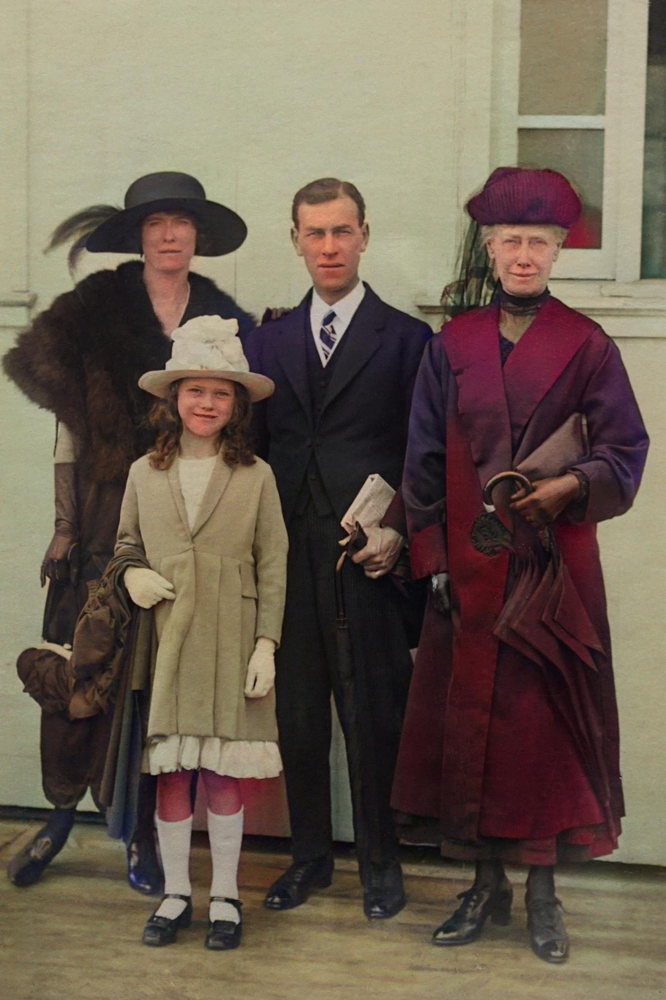

扫描或导入
用相机把纸质照片数字化。扫描器会自动识别照片边缘，裁掉背景后再修复。
AI 老照片修复
把泛黄的全家福、模糊的童年照片、带划痕的黑白照片，变成干净的高清图像——自然、真实。
一键完成，不需要修图基础。扫描或上传，AI 处理，保存结果。
用相机把纸质照片数字化。扫描器会自动识别照片边缘，裁掉背景后再修复。
深度学习分析画面，为老照片加上自然、真实的颜色——不是生硬的涂色，而是符合场景的色彩。
针对人像优化，把模糊的五官重新对焦，恢复表情和细节。
识别并去除折痕、划痕、撕裂和污渍，让老照片重新完整。
把低分辨率照片提升到清晰的高清质感，清理胶片颗粒和运动模糊。
原图与修复结果并排对比，满意后保存，并在记录里再次找到。
下面两张照片都使用时光修复师修复。每张图左半部分是原图，右半部分是修复结果。

过去要请专业人士花几天完成的修复，现在几秒钟就能看到结果。
用相机对准纸质照片，或直接导入手机里已有的照片。
根据照片情况选择深度修复、经典修复或仅上色。
对照原图检查结果，满意后保存，把记忆分享给家人。
会。修复在云端运行，提交的照片会上传到我们的后端，并发送给 AI 处理服务商以生成结果。扫描器的边缘检测在设备上完成，但开始修复时裁剪后的图片会上传。提交修复的照片不会分享给广告商。
AI 服务商可能繁忙或限流，过大或破损严重的文件可能超时。稍后重试；失败任务通常会退回次数。如果持续失败，请带上大概时间和设备型号联系我们。
上色和人脸修复是概率性的，不同照片效果不同。清晰、光线均匀、正面的扫描通常效果最好。可以换一种修复模式、重新扫描，或先裁剪到主体。
把照片放在平整、光线均匀的表面上，避免反光，让照片占满画面大部分，并让扫描器自动识别边缘。避免阴影，也不要隔着玻璃拍摄。
可以。时光修复师已在 App Store（iPhone 和 iPad）和 Google Play 上架。
InkFlow把脑海里的纹身想法，变成可以拿给别人看的方向。
了解 InkFlow